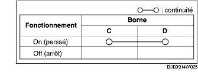

INSPECTION DE CONTACTEUR DE POUSSÉE DE CYLINDRE DE SERRURE DE PORTE DE COFFRE
B3E091467005W06
1. Contrôler la continuité entre les bornes du contacteur de poussée de cylindre de serrure de porte de coffre.
-
• Si les valeurs mesurées ne correspondent pas aux valeurs spécifiées, remplacer le cylindre de la serrure de porte de coffre.
